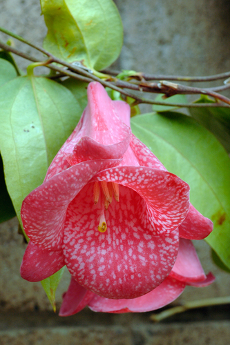

Philesiaceae
The Philesiaceae family is a small family of monocotyledonous flowering plants in the order Liliales. It comprises only two monotypic genera (one species each): Philesia magellanica, a shrub or vine, and Lapageria rosea, a robust vine famous as the Chilean Bellflower. Both species are evergreen and endemic to the cool temperate rainforests (Valdivian and Magellanic forests) of southern South America (Chile and adjacent Argentina).
Overview
Philesiaceae is a distinctive family within the Liliales order, characterized by its two species known for their showy, bell-shaped, bird-pollinated flowers. Lapageria rosea, the Copihue or Chilean Bellflower, is the national flower of Chile and is widely cultivated for its large, waxy, pink to red flowers. Philesia magellanica has smaller, more tubular pink flowers and can grow as an erect shrub or climb epiphytically on trees.
Both species inhabit the humid, cool forests of southern Chile and bordering areas of Argentina. Their thick, leathery leaves and robust flowers are adaptations to this environment. Phylogenetically, Philesiaceae is part of the core Liliales and is closely related to other families within the order, such as Liliaceae and Smilacaceae. The family's restricted distribution in southern South America points to its ancient origins and connection to the flora of that region.
While Lapageria is horticulturally significant, the family has limited direct economic use otherwise, but it is ecologically important in its native habitat and scientifically valuable for understanding Liliales evolution and biogeography.
Quick Facts
- Scientific Name: Philesiaceae
- Common Name: Chilean Bellflower Family (informal)
- Number of Genera: 2 (Philesia, Lapageria)
- Number of Species: 2
- Distribution: Southern South America (Chile, adjacent Argentina)
- Evolutionary Group: Monocots - Liliales
Key Characteristics
Growth Form and Habit
Plants are evergreen shrubs (Philesia) or twining woody vines/lianas (Lapageria). Philesia can also be somewhat scandent or epiphytic. Roots are often fibrous with tubers.
Leaves
Leaves are alternate, simple, with entire margins and a leathery (coriaceous) texture. They are short-petioled or nearly sessile. Venation is primarily parallel, typical of monocots, but may appear somewhat net-veined due to prominent cross-veinlets.
Inflorescence
Flowers are usually borne singly (solitary) and are terminal or axillary, typically nodding (hanging downwards).
Flowers
Flowers are large, showy, actinomorphic (radially symmetrical), bisexual, and typically bell-shaped (campanulate) or tubular. Key features include:
- Perianth: Consists of 6 thick, fleshy or leathery tepals arranged in two distinct whorls of 3. The inner whorl is usually larger and more brightly colored (typically shades of pink, red, or occasionally white) than the outer whorl.
- Androecium: Features 6 stamens. Filaments are free or connate (fused) basally, sometimes forming a tube around the style. Anthers are basifixed or dorsifixed, dehiscing via longitudinal slits.
- Gynoecium: Features a superior ovary composed of 3 fused carpels. It is typically unilocular (one chamber) with parietal placentation (ovules attached to the ovary wall), or sometimes reported as 3-locular with axile placentation. Ovules are numerous. The style is simple and elongated, with a 3-lobed or capitate stigma. Nectaries are usually present at the base of the ovary or tepals.
Fruits and Seeds
The fruit is a fleshy berry, often somewhat elongated or ovoid, containing numerous seeds embedded in pulp. The berries are typically greenish, yellowish, or reddish when mature.
Chemical Characteristics
Limited information is available on specific chemical compounds. Saponins may be present, as in many other Liliales.
Field Identification
Identifying the two species of Philesiaceae in their native habitat in southern South America relies on recognizing their distinctive vegetative and floral features:
Primary Identification Features
- Habit: Evergreen shrub (Philesia) or twining vine (Lapageria).
- Leaves: Alternate, simple, entire, leathery texture.
- Flowers: Large, solitary, nodding, bell-shaped or tubular, with 6 thick, fleshy/leathery tepals (usually pink/red).
- Ovary: Superior.
- Fruit: A fleshy berry.
- Location: Restricted to cool temperate rainforests of southern Chile and adjacent Argentina.
Secondary Identification Features
- Lapageria: Robust vine, large (up to 8-10 cm long) campanulate flowers.
- Philesia: Shrub or climber, smaller (2-3 cm long) tubular/narrowly campanulate flowers.
- Parallel leaf venation (though cross-veins can be visible).
Seasonal Identification Tips
- Flowering predominantly occurs during the Southern Hemisphere's spring and summer months.
- The large, brightly colored flowers are very conspicuous when present.
- Evergreen leaves and habit allow for identification year-round.
Common Confusion Points
While the flowers are highly distinctive, vegetative confusion might occur:
- Other vines or shrubs in the Valdivian/Magellanic rainforests: Check for the combination of alternate, simple, leathery leaves with parallel (or sub-parallel) venation.
- Superficial resemblance to some Ericaceae (dicots): Ericaceae have net-veined leaves and typically 5-parted (or 4-parted) flowers, often urn-shaped.
- Alstroemeriaceae: Also in Liliales, but flowers are usually zygomorphic (bilaterally symmetrical) and leaves are often resupinate (twisted at the base).
- The combination of large, solitary, 6-parted, bell-shaped/tubular flowers with thick tepals and a superior ovary forming a berry is characteristic of Philesiaceae in its range.
Field Guide Quick Reference (Philesiaceae)
Look For (in S. Chile/Argentina):
- Evergreen shrub or twining vine
- Leaves: Alternate, simple, leathery
- Flowers: Large, solitary, nodding
- Perianth: 6 thick tepals, bell-shaped/tubular (pink/red)
- Stamens: 6
- Ovary: Superior, 3 carpels
- Fruit: Berry
Key Distinctions:
- Lapageria: Vine, large bell flowers
- Philesia: Shrub/climber, smaller tubular flowers
- Monocot features (parallel venation)
- Different from Ericaceae (leaf venation, flower parts)
- Different from Alstroemeriaceae (flower symmetry, leaf resupination)
Notable Examples
The family comprises two well-known species, each in its own genus:

Lapageria rosea
Chilean Bellflower, Copihue
The national flower of Chile, this robust evergreen vine climbs high into trees in its native Valdivian rainforest habitat. It is famed for its large (up to 10 cm), waxy, pendant, bell-shaped flowers, typically deep pink or red, though white cultivars exist. It produces an edible, fleshy berry.

Philesia magellanica
Pepino
Found in the Magellanic moorlands and cool rainforests further south than Lapageria, this species grows as an erect shrub or climbs weakly, often epiphytically. It has smaller, more narrowly tubular or funnel-shaped, deep pink flowers (2-3 cm long) and small berries.
Phylogeny and Classification
Philesiaceae is classified within the order Liliales, a major lineage of Monocots. Molecular phylogenetic studies place it firmly within the core group of Liliales families.
It is considered closely related to other families such as Liliaceae (Lily family), Smilacaceae (Greenbrier family), and Ripogonaceae. Some classifications also suggest a close relationship with Luzuriagaceae (often included within Alstroemeriaceae). The exact sister relationship can vary slightly between studies, but its position within the broader Liliales clade is well-supported.
The family's restricted distribution to southern South America, combined with its phylogenetic position, suggests it represents a lineage with ancient Gondwanan origins that diversified in isolation in that region.
Position in Plant Phylogeny
- Kingdom: Plantae
- Clade: Angiosperms (Flowering plants)
- Clade: Monocots
- Order: Liliales
- Family: Philesiaceae
Evolutionary Significance
Philesiaceae is evolutionarily important for several reasons:
- Its restricted Southern Hemisphere distribution contributes to understanding Gondwanan biogeography.
- The large, fleshy, brightly colored flowers are classic examples of adaptation to bird pollination (specifically hummingbirds) within the monocots.
- It represents morphological diversity within Liliales, particularly in habit (vine vs. shrub) and floral form, despite comprising only two species.
- Studying its relationships helps clarify the evolutionary history and diversification of the Liliales order.